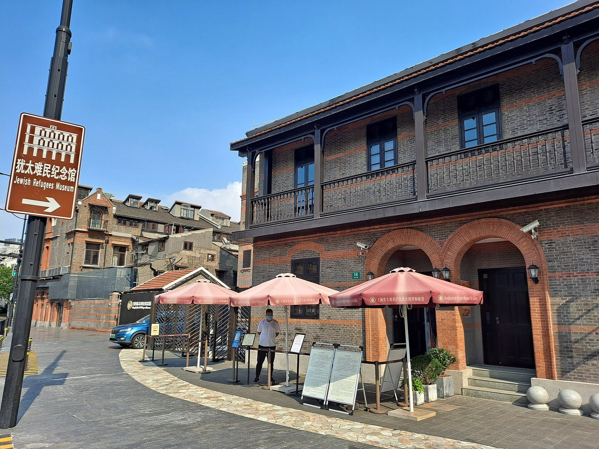
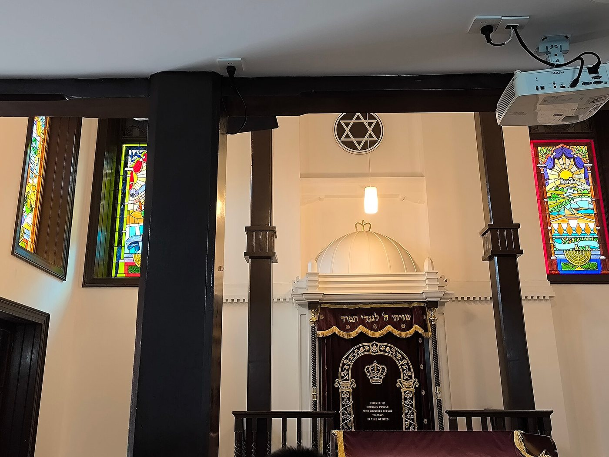

Shanghai Jewish Refugees Museum (Ohel Moshe Synagogue) 上海犹太难民纪念馆（摩西会堂旧址）
Museum in a restored 1927 synagogue · Hongkou
CheckedHours and prices read · 15 Nov 2026

A 1927 synagogue tells how about 20,000 Jewish refugees fled to Shanghai. CNY 20; bring a passport.
Why it matters
From the mid-1930s about 20,000 European Jews fled Nazi persecution to Shanghai, an open port where no visa was needed before 1941. In February 1943 the Japanese authorities ordered stateless refugees into a Hongkou area of under 3 sq km that already housed about 100,000 Chinese. Most refugees survived the war.
What to see
The restored 1927 Ohel Moshe synagogue; a six-part exhibition on the escape, life in refuge, the 1943 designated area and departure; the Wall of Names (19,672 names since 21 Oct 2025) with a searchable database.
How to get there
Bring your passport (real-name ticket). Show the driver 上海市虹口区长阳路62号. Buy tickets on Meituan, Dianping or Ctrip, or at the window.
Local tip
Walk nearby Zhoushan and Huoshan roads, where the museum lists refugee-era sites (mostly exteriors): the old Joint Distribution Committee office (119-121 Huoshan Road) and Huoshan Park's 1994 monument.
Watch out
Closed Mondays (Mon 30 Nov). Free talks are Chinese only. Sources differ on numbers (18,000 to 23,000 in the area) and the end date: Wikipedia says liberated 3 Sep 1945; the museum gives no date, and Japan announced surrender on 15 Aug.
Did you know
Roughly 18,000 to 20,000 Jewish refugees reached Shanghai between the late 1930s and December 1941; no entry visa was needed. In February 1943 the stateless among them were ordered into a Hongkou zone of under 3 sq km.
The museum's Wall of Names, still growing, held 13,732 names in 2014 and 19,672 after October 2025 (museum's own figures).
Caveat and sources
Counts differ: about 20,000 (museum) or 18,000 (Encyclopaedia Judaica). 'No entry visa' is from Encyclopaedia Judaica and Wikipedia; the museum stresses consul Ho Feng-Shan's visas, which let refugees leave Europe. Tue-Sun 9:00-17:00, last entry 16:00, closed Monday; adult CNY 20, real-name ticket (bring your passport); free tours in Chinese only; phone 021-55133186 before going, as one-off closures happen.
- Shanghai Jewish Refugees Museum (exhibition page)shhkjrm.com Opens in a new tab
- Shanghai Jewish Refugees Museum (Wall of Names page)shhkjrm.com Opens in a new tab
- Shanghai Jewish Refugees Museum (visitor guide)shhkjrm.com Opens in a new tab
- Jewish Virtual Library (Encyclopaedia Judaica)jewishvirtuallibrary.org Opens in a new tab
What was checked, and what was not
Read on 15 Nov 2026
Museum's own visitor guide read 15 Nov 2026: hours, prices, real-name ticketing. Its 28 Sep and 16 Oct 2026 notices show it operating; a Nov 2026 reseller table also shows Mondays closed.
Not checked
English-language tours (the free talks are Chinese only); whether walk-up tickets sell out on busy days.